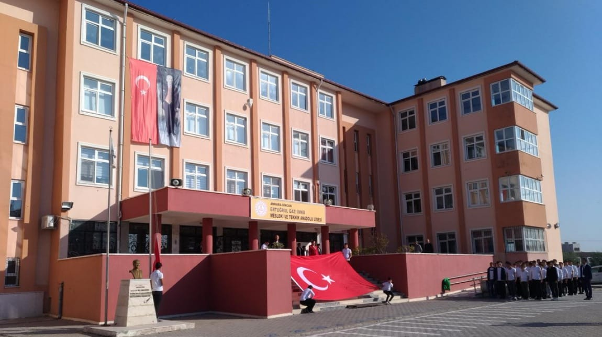

Vizyon: Bilim ve teknolojinin farkında olan, değişime ve gelişime açık, öğrenmeyi temel ihtiyaç kabul eden, değerlerini yaşayan ve yaşatan, hoşgörü sahibi, farklılıkları zenginlik kabul eden, teknolojiyi çok iyi kullanabilen, sosyal ve kültürel faaliyetlere katılımcı, kendini sorgulayan, etkili ve nitelikli, çağdaş, demokratik ve lâik bireyler yetiştirmektir. Misyon: Öğrencilerimizin; Bireysel niteliklerini dikkate alarak öğrenmelerini, bilgili, becerili, özgüvenli olmalarını, çevresi ile iyi ve olumlu iletişim kuracak davranışları kazanmalarını, olaylara çok yönlü ve tarafsız bakabilmelerini, çağın gelişen ihtiyaçlarına cevap verebilecek beceriler kazanmalarını, gelişen teknolojiyi izleyip kullanabilmelerini, liderlik özelliklerinin yanı sıra işbirliği ve ekip çalışmalarına yatkın bireyler olmalarını sağlamaktır...

Bilişim Teknolojileri alanı
Okulumuzda Bilişim Teknolojileri Alanı; Yazılım Geliştirme Dalında, 3 Laboratuvarı ve 7 kişilik öğretmen kadrosuyla eğitim vermektedir.Alanımızın iş olanakları
Alanımızı tercih etmek isteyen öğrencilerimiz;
"Bilgisayar Bölümü" diyorlardı bundan yirmi yıl öncesinde alanımızın adına… Akıllı telefonlar, tabletler, mobil cihazlar derken adımız değişti.
"Bilişim Teknolojileri Alanı" demeye başladılar.
Tüm bu cihazların ortak noktası da yazılımlardı. Aslında sadece bu cihazlarda değil. Evinizdeki, iş yerinizdeki her türlü elektronik cihazın çalışması yazılımlarla sağlanıyor. Evinizdeki televizyonunuz, kombiniz, çamaşır-bulaşık makineniz, hatta buzdolabınızın elektronik aksamında yazılım bulunmakta. Bilişim Teknolojileri Alanında eğitim her ne kadar bilgisayar başında yapılıyorsa da, eğitim aslında tüm elektronik cihazlara hitap ediyor.
Alanımızda yazılım geliştirmeyi öğretiyoruz. Nesne Tabanlı Programlamayı, Web Tabanlı Uygulama Geliştirme Yazılımlarını, Grafik Animasyonu, Robotik Kodlamayı, Yapay Zekayı öğreniyorsunuz. Alan dersleriyle inşaatın temelini atıyorsunuz. Temelin üzerine kat çıkmak size kalıyor. Günümüzde bilgiye ulaşmak çok kolay. Eğer kullanmasını bilirseniz alacağınız başka eğitimlerle bir televizyonun çalışması için kullanılan yazılımı, bir arabanın arızalarını bulmak için kullanılan yazılımı değiştirebilir, cihazların daha verimli çalışmasını sağlayabilirsiniz. Biraz elektronik ve robotik kodlama bilgisiyle akvaryumunuzu akıllı akvaryuma, evinizi akıllı eve dönüştürebilirsiniz. Bilişim çağını yaşıyoruz ya da yaşatıyoruz. Siz hangi taraftasınız? Bilişim çağını yaşayanlardan mı, yaşatanlardan mı? Bilgisayar oyununu oynayanlardan mı, oyunu programlayanlardan mı olmak isterdiniz? Öğrencilerimizin çoğu Bilişim Teknolojileri Alanına bilgisayara olan ilgilerinden dolayı geldiklerini söylüyorlar. İlgiden kastettiğiniz oyun, internet, sosyal ortamlardaki gezintileriniz ise bunu yedi yaşındaki de, yetmiş yaşındaki de yapabiliyor. Merakınız, oyunu oynamaktan çok oyunun nasıl programlandığı yönünde ise Bilişim Teknolojileri Alanına hoş geldiniz. Sabredin, merak edin, çalışın. Er ya da geç iyi bir programcı, yazılımcı, mühendis ya da bu işin uzmanı olacaksınız.
YÜKSEKÖĞRETİM PROGRAMLARI ÖNLİSANS
Lisans(4 yıl)
Türkiye uzun süredir iş gücünün niteliğini yükseltmek ve ekonominin tüm sektörlerinde istihdam imkânlarını artırabilmek için mesleki eğitim sistemini geliştirmeye çalışmaktadır. Bu çaba Türkiye’nin dünyanın önde gelen ekonomileri arasında rekabet edebilirliği ve Avrupa Birliğine giriş sürecinde daha da anlamlı hâle gelmektedir. Ülkemiz ekonomisi açısından çok önemli olan bu sektöre kalifiye eleman yetiştiren mesleki eğitim sistemine yeni bir anlayış getirecektir.
Ülkemizde, muhasebecilik yasalarla düzenlenmiş bir meslektir. Muhasebe ile ilgili ilk kanunumuz Mustafa Kemal ATATÜRK zamanında çıkartılmış olan 26.05.1927 tarih ve 1050 Sayılı Muhasebe-i Umumiye Kanunudur. 26.07.2008 tarih ve 26948 sayılı Resmi Gazete’de yayımlanan 5786 sayılı kanunun 1.maddesi ile 3568 sayılı kanun “Serbest Muhasebeci Mali Müşavirlik ve Yeminli Mali Müşavirlik Kanunu “ olarak değiştirilerek serbest muhasebecilik mesleği kaldırılmıştı
Dünyada ve ülkemizde elektronik ticaret ve teknoloji hızla gelişmektedir. Buna bağlı olarak ticarette yaygınlaşmaktadır. Gelişme ve değişimlere göre muhasebe belgelendirme, kayıt, raporlama, analiz ve yorumlama yöntemlerinde de gelişmeler ve değişimler olmaktadır.
Ticari yaşamda işletmelerin başarılı yönetilebilmesi işletmelerde muhasebe kayıtlarının ve bunun sonucu alınan raporların doğru yorumlanması ve analiz edilmesine bağlıdır. Muhasebe ve Ticaret alanında çalışanların teknolojideki ve ticari yaşamdaki yenilikleri takip etmesi, uyum sağlaması kayıt, raporlama, analiz ve yorumlamaları daha doğru ve hızlı yapmalarını sağlayacaktır.
Gününüzde ticari yaşamı düzenleyen kanun, yönetmelik ve kurallar hızla değişmeye başlamıştır. Muhasebe ve Ticaret alanında çalışanlar kanun ve yönetmeliklerdeki değişiklikleri yakından takip edebilmelidir.
Muhasebe ve dış ticaret alanında çalışacak elemanların sektörünün istediği nitelikte yetiştirilmesi için program güncellemesine ihtiyaç duyulmuştur. Bu ihtiyaca cevap verecek güncelleme yapılmıştır.
(MUHASEBE DALI) & (DIŞ TİCARET DALI)
Yeni çağ becerileri ve tasarım odaklı düşünme yaklaşımı doğrultusunda “meslek etiği ve ahilik, iş sağlığı ve güvenliği, teknolojik gelişmeler ve endüstriyel dönüşüm, çevre koruma, girişimci fikirler, iş kurma ve yürütme, fikrî ve sınai mülkiyet hakları” konularında mesleki gelişim sağlayacak beceriler kazanma,
•İş sağlığı ve güvenliği tedbirlerini alarak temel muhasebe uygulama ve işlemlerini mevzuatına uygun şekilde yapmak için bu dallar seçilmiştir.
Çalışma Ortamı Ve Koşulları
Muhasebe hizmetleri genellikle büro ortamında yürütülmektedir. Temiz büro ortamlarında, işçi sağlığı ve işçi güvenliği açısından önemli bir risk bulunmamaktadır. Muhasebe de kullanılan bildirge ve beyannameler günlü olduğundan, vergi ve yükümlülükler yerine getirilirken zaman çok önemlidir. Yükümlülüklerin gününde yerine getirilmesi zorunludur.
İş Bulma İmkanları
Meslek mensupları; muhasebe ve mali müşavirlik bürolarında, dış ticaret ve finans kuruluşlarının ilgili departmanları ile ticarî işletmelerin muhasebe servislerinde çalışabilirler. Ayrıca her türlü kuruluşun mali işlerle ilgili bölümlerinde çalışabilirler. Mesleğin oldukça geniş bir çalışma alanı mevcuttur.
Okulumuz Pazarlama ve Perakende Alanında Sigortacılık Dalı okutulmaktadır.
Mal, can ve diğer sigorta edilebilir riskleri belirleyip sigorta poliçesi üreten, hasar takip işlemleri yapabilen, sorumlu nitelikli kişidir.
Ön lisans bölüm okuyan öğrencilerimiz OSYM tarafından düzenlenen DGS 'ye katılarak lisans bölümlerine geçiş yapabilme imkanına sahiptirler.
Bu meslek görevlileri hem kamu sektöründe hem özel sektörde iş bulabilirler. Özellikle özel sektörde iş alanı daha geniştir. Sigorta Genel Müdürlüklerinde, Sigorta Bölge Müdürlüklerinde ve Sigorta Acentelerinde iş bulma imkanları vardır.
Ayrıca; Sigorta acentenizi açarak kendi işinizin patronu olabilirsiniz. Sigorta acentenizde personel çalıştırabilirsiniz.
